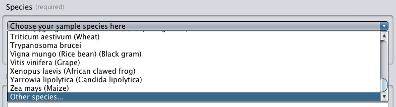
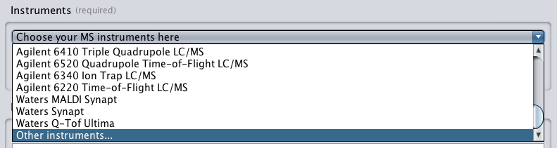
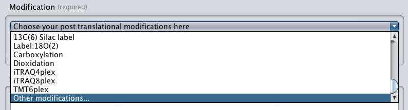
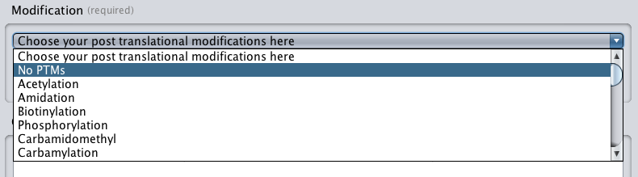

Species
Specify a list of species used in your experiment. There is a commonly used list of species predefined in the drop-down list shown in the screenshot below.
You may have species which are not included in the predefined list. In which case,
you can select the "Other species..." option from the drop-down list. This will open Ontology
Lookup Service
dialog window, you can then search for the correct ontology terms using term name.
.
Instrument
Specify a list of instruments used in your experiment. There is a commonly used list of instruments predefined in the drop-down list shown in the screenshot below.
You may have instruments which are not included in the predefined list. In which case,
you can select the "Other instruments..." option from the drop-down list. This will open Ontology Lookup Service
dialog window, you can then search for the correct ontology terms using term name.
.
Modification
Specify a list of modification used in your experiment. There is a commonly used list of modifications predefined in the drop-down list shown in the screenshot below.
You may have modifications which are not included in the predefined list. In which case,
you can select the "Other modifications..." option from the drop-down list. This will open Ontology Lookup Service
dialog window, you can then search for the correct ontology terms using term name.
.
No modifications
If no modifications are involved in your experiment, then you should choose the "No PTMS" options, shown in the screenshot below:.